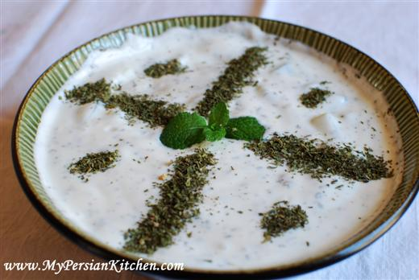

Mast O Khiar

Description
When you're having a Persian dish, add mast-o khiar to bring down the spice. Have it on a hot day and your family is telling you to do it for your stomach.
Ingredients
- Cucumbers
- Yogurt
- Mint
- Salt
Steps
- Cut the ends off the cucumber.
- Grate the cucumber into a bowl.
- Scoop out some yogurt and mix the two.
- Add a pinch of salt and mix again.
- Sprinkle mint on top.